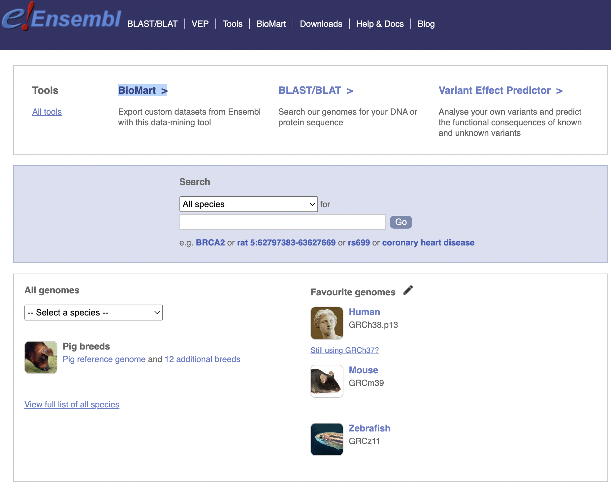
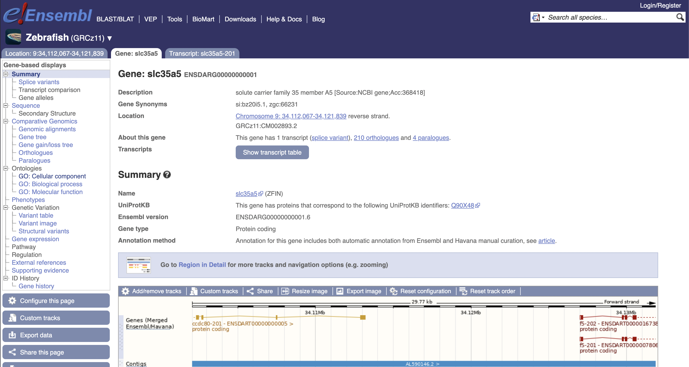
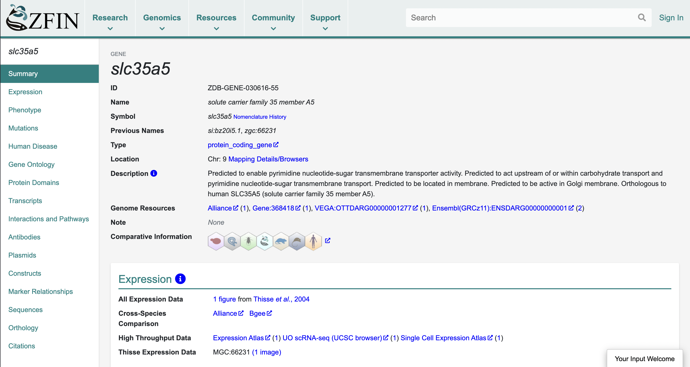
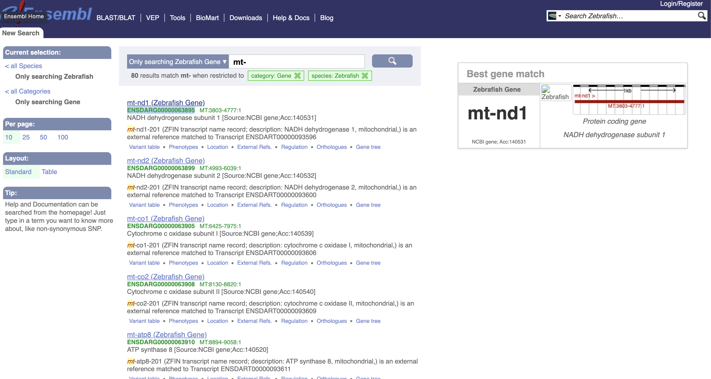
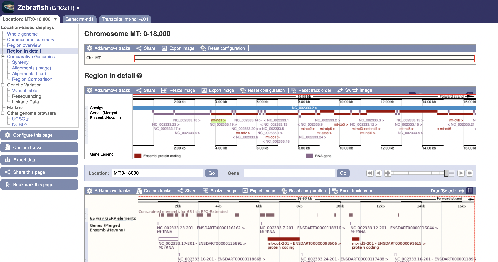
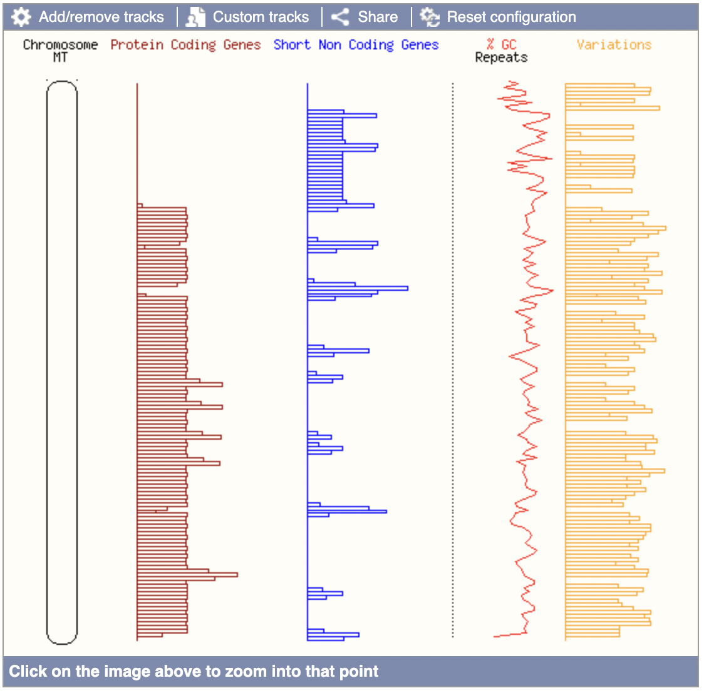
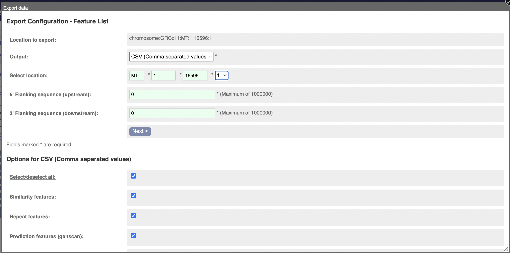

# I had to also install pybiomart, which was only on pip
from scanpy import queriesExploring Ensembl
Work
Useful
Omics
A side quest in understanding how to work with genetic data.
So, I’ve been working on blog posts that do a walkthrough on working with genetic data. I keep running into issues and having to go on sidequests (😅) but I think this one deserves its own blog post. Shoutout to Morgan for the help.

A major resource in bioinformatics is Ensembl. In this blog post, we’ll spend some time exploring it, capping off with using it to accomplish the useful task of how to grab all known mitochondrial genes in Zebrafish (Danio rerio).
Suppose in our dataset we had a gene called ENSDARG00000000001. What can we actually say about it? Well, first of all, this is an Ensembl ID, so it follows the pattern ENS[species prefix][feature type prefix][a unique eleven digit number]. In this case, DAR is the species (Danio rerio) and G indicates that it is referring to a gene.
We can look this gene up on Ensembl to learn more about it:

This gene is also known as slc35a5, but these names can be harder to work with as it is subject to change if our knowledge about its role in biological processes changes; the Ensembl ID is more permanent. On the other hand, this name is arguably more informative, as it is an abbreviation for its role as “solute carrier family 35 member A5”.
If we want to investigate this gene more, we can click on the ZFIN link provided in the summary section.

Here we can see yet another gene ID (ZDB-GENE-030616-55), as well as a link to the naming history of this gene which may be fun to explore. There are some other goodies on this page, but we’ll return to Enbembl as that is the topic of this post.
Our goal is to get a list of all mitochondrial genes in Danio rerio. ENSDARG00000000001 is not a mitochondrial gene, because it is located on chromosome 9. One way to find a list of mitochondrial genes is to search for genes with names beginning with mt-, because that is how mitochondrial genes are named.

However, this isn’t convenient for manual use!
Failed attempt at using scanpy
One way to try to get this data is to use scanpy:
queries.mitochondrial_genes(
"drerio",
attrname = "ensembl_gene_id"
)HTTPError: 500 Server Error: Internal Server Error for url: http://www.ensembl.org:80/biomart/martservice?type=registryUnfortunately, Biomart was down at the time I tried to do this! (Biomart seems to be the api for this type of stuff).
Use this data-mining tool to export custom datasets from Ensembl.
I found that the “asia” mirror of Biomart gives a different error:
mitgenes = queries.mitochondrial_genes(
"drerio",
attrname = "ensembl_gene_id",
host = "asia.ensembl.org"
)
mitgenesHTTPError: 504 Server Error: Gateway Time-out for url: http://asia.ensembl.org:80/biomart/martservice?type=registryAnother way to get the data is to search by location. We can play around with their region-searcher to see that the mitochondrial dna of a zebrafish is just over 16 kilobases long (16,596 bases to be exact).

If we do that, we can find this cute overview of the mitochondrial dna:

Not relevant to us, though - we want to click on the “export” button, which will give us this popup:

You can then download all the mitochondrial data! It’s a rather small file that looks like this:
seqname,source,feature,start,end,score,strand,frame,hid,hstart,hend,genscan,gene_id,transcript_id,exon_id,gene_type,variation_name,probe_name
MT,EVA,variation,113,113,.,+,.,,,,,,,,,rs508804888,
[...]
MT,Ensembl,gene,951,1019,.,+,0,,,,,ENSDARG00000083480.3,ENSDART00000116162.3,ENSDARE00000880048,Mt_tRNA,,
[...]import pandas as pdmito_data = pd.read_csv("./localdata/mt-danio-rerio.txt", sep=",")
mito_data| seqname | source | feature | start | end | score | strand | frame | hid | hstart | hend | genscan | gene_id | transcript_id | exon_id | gene_type | variation_name | probe_name | |
|---|---|---|---|---|---|---|---|---|---|---|---|---|---|---|---|---|---|---|
| 0 | MT | EVA | variation | 113 | 113 | . | + | . | NaN | NaN | NaN | NaN | NaN | NaN | NaN | NaN | rs508804888 | NaN |
| 1 | MT | EVA | variation | 239 | 239 | . | + | . | NaN | NaN | NaN | NaN | NaN | NaN | NaN | NaN | rs513784503 | NaN |
| 2 | MT | EVA | variation | 314 | 314 | . | + | . | NaN | NaN | NaN | NaN | NaN | NaN | NaN | NaN | rs504526537 | NaN |
| 3 | MT | EVA | variation | 339 | 339 | . | + | . | NaN | NaN | NaN | NaN | NaN | NaN | NaN | NaN | rs511578098 | NaN |
| 4 | MT | EVA | variation | 438 | 438 | . | + | . | NaN | NaN | NaN | NaN | NaN | NaN | NaN | NaN | rs514602887 | NaN |
| ... | ... | ... | ... | ... | ... | ... | ... | ... | ... | ... | ... | ... | ... | ... | ... | ... | ... | ... |
| 174 | MT | Ensembl | gene | 14714 | 15232 | . | - | 0 | NaN | NaN | NaN | NaN | ENSDARG00000063922.3 | ENSDART00000093623.3 | ENSDARE00000685766 | protein_coding | NaN | NaN |
| 175 | MT | Ensembl | gene | 15233 | 15301 | . | - | 0 | NaN | NaN | NaN | NaN | ENSDARG00000083312.3 | ENSDART00000116823.3 | ENSDARE00000882905 | Mt_tRNA | NaN | NaN |
| 176 | MT | Ensembl | gene | 15308 | 16448 | . | + | 0 | NaN | NaN | NaN | NaN | ENSDARG00000063924.3 | ENSDART00000093625.3 | ENSDARE00000685768 | protein_coding | NaN | NaN |
| 177 | MT | Ensembl | gene | 16449 | 16520 | . | + | 0 | NaN | NaN | NaN | NaN | ENSDARG00000083462.3 | ENSDART00000116552.3 | ENSDARE00000881627 | Mt_tRNA | NaN | NaN |
| 178 | MT | Ensembl | gene | 16527 | 16596 | . | - | 1 | NaN | NaN | NaN | NaN | ENSDARG00000081475.3 | ENSDART00000115546.3 | ENSDARE00000882281 | Mt_tRNA | NaN | NaN |
179 rows × 18 columns
# Grab all the genes, get their ids, and chop off the '.3'
# ending which indicates the version
mito_genes = mito_data[mito_data["feature"] == "gene"]["gene_id"].apply(
lambda x: x[:-2]
)
mito_genes142 ENSDARG00000083480
143 ENSDARG00000082753
144 ENSDARG00000081443
145 ENSDARG00000080337
146 ENSDARG00000083046
147 ENSDARG00000063895
148 ENSDARG00000083118
149 ENSDARG00000080630
150 ENSDARG00000082084
151 ENSDARG00000063899
152 ENSDARG00000080718
153 ENSDARG00000080401
154 ENSDARG00000081938
155 ENSDARG00000082789
156 ENSDARG00000080128
157 ENSDARG00000063905
158 ENSDARG00000081369
159 ENSDARG00000083519
160 ENSDARG00000063908
161 ENSDARG00000080151
162 ENSDARG00000063910
163 ENSDARG00000063911
164 ENSDARG00000063912
165 ENSDARG00000081758
166 ENSDARG00000063914
167 ENSDARG00000080329
168 ENSDARG00000063916
169 ENSDARG00000063917
170 ENSDARG00000082716
171 ENSDARG00000082123
172 ENSDARG00000081280
173 ENSDARG00000063921
174 ENSDARG00000063922
175 ENSDARG00000083312
176 ENSDARG00000063924
177 ENSDARG00000083462
178 ENSDARG00000081475
Name: gene_id, dtype: objectmito_genes.to_csv("./localdata/mito-genes.csv", index=False)So, uh, yeah - success!